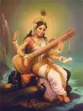

Music has always held a special place in human society, transcending cultural, linguistic, and religious boundaries. Its enchanting melodies, rhythmic beats, and harmonious compositions resonate deep within our souls, often evoking emotions that words alone cannot express. In this essay, we explore how music, in its myriad forms, serves as a powerful vessel for experiencing the presence of God.
Music as Spiritual Expression
Across the world, in diverse religious traditions, music plays a central role in worship and spiritual practices. Whether it's the soul-stirring chants of Gregorian monks, the devotional bhajans of Hindu saints, or the melodic recitations of Islamic prayers, music serves as a conduit for connecting with the divine. Through music, believers express their deepest reverence, devotion, and love for God, transcending the limitations of language and intellect.
Harmony and Unity in Music
One of the most profound aspects of music is its ability to create harmony and unity among people. In a world often divided by differences, music acts as a unifying force, bringing together individuals from all walks of life. Whether it's a symphony orchestra performing Beethoven's Ninth Symphony or a spontaneous street performance by local musicians, the power of music to foster unity and understanding is undeniable.
Inspiration and Creativity
Many composers and musicians throughout history have attributed their creative genius to divine inspiration. From Mozart to Bach, from Beethoven to Handel, countless maestros have spoken of moments of transcendence, where melodies flowed effortlessly from the depths of their souls. In such moments, they felt a profound connection to something greater than themselves, channeling the divine through their music.
Healing and Transformation

Beyond its artistic and spiritual dimensions, music also possesses remarkable healing properties. Scientific studies have shown that music can reduce stress, alleviate pain, and promote overall well-being. Whether it's the soothing strains of a lullaby calming a restless infant or the uplifting rhythms of a gospel choir bringing hope to the downtrodden, music has the power to heal and transform lives.
In conclusion, music serves as a sacred bridge between the earthly and the divine, allowing us to experience the presence of God in profound and mysterious ways. Through its spiritual expression, harmonious unity, divine inspiration, and transformative healing, music invites us to embark on a journey of transcendence, connecting with the infinite beauty and wonder of the divine symphony that surrounds us.